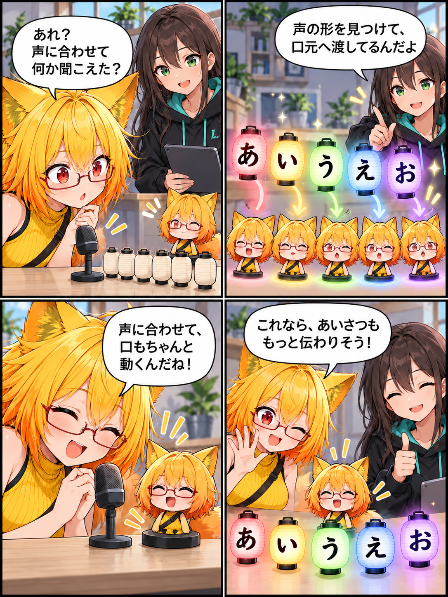

2026.10.21 / Development Log / Feature Spotlight
閑話休題：声に合わせて、アバターが話し出す
今回は新しい実装実績ではなく、VRASで使えるリアルタイムリップシンクを紹介します。マイク音声を解析し、アバターの口形状へ反映して、話している印象をつくる既存機能です。
今回は feature-spotlight（閑話休題） です。集計期間は2026-10-20 03:00:00 JSTから2026-10-21 02:59:59 JST、参照ブランチはViewerの
main です。集計終了時点のHEADは f3a72c3dd1a8d6cbd3a5e3c7818394d653668929、期間内コミットは0件でした。未コミット差分は対象期間の実績と確認できないため含めず、現在実装済みの機能を紹介します。
声の特徴を、口元へつなぐ
VRASのリップシンクは、マイクから入る音声を解析し、あ・い・う・え・おに対応する口の形へ反映します。声量だけで口を開け閉めするのではなく、母音ごとの違いを口元へ渡すことで、話している表情をつくります。
VRMでも、別の名前のBlendShapeでも
対応先は、VRMで定義された口形状だけではありません。アバター側のBlendShape名から既知の母音表現を探す経路もあり、名前が異なるアバターでも、使える口形状を見つけられるようにしています。見つけた対象は、アバターを読み込んだときにまとめて扱います。
DesktopとVRで、同じ声を使う
リップシンクはViewer全体で共有する仕組みです。DesktopとVRで別々にマイクを扱うのではなく、同じ音声解析と口形状への反映を使うため、見る場所が変わってもアバターの声に合わせた表情を保ちやすくなります。
4コマの裏話
今回は五つの母音を小さなランタンに見立てました。ろひの声に合わせてランタンが灯り、その光が小さなアバターの口元へ届くという場面です。今日この機能を実装したという意味ではなく、VRASにあるリップシンクの流れを小さな寸劇にしています。
まとめ
VRASはマイク音声を解析し、あ・い・う・え・おの口形状をアバターへ反映できます。VRMの定義やBlendShape名を手がかりに対象を解決し、DesktopとVRの両方で共有する、声に合わせた表情のための既存機能です。
本日のひとこと
声の形が届けば、あいさつはもう少し伝わる。